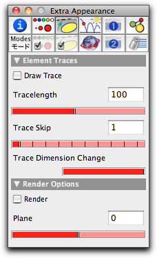
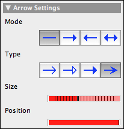

Traces, Arrows, Rendering
The second important information block for setting appearance can be selected by the button
 . In this block you can alter the behavior of traces and arrows.
. In this block you can alter the behavior of traces and arrows.Traces
Arrows apply only when segments are selected. So for most selections this inspector block will look as follows:
 |
| Trace inspector |
The majority of these controls are related to traces. Traces are perhaps one of the most useful small extensions of Cinderella.2. One can draw a trace of any object. Traces dim out with time, resulting in the impression of a dynamic process. The following pictures show two applications of traces. In the first picture is shown the trace of six points obtained by reflecting a point with respect to a collection of mirrors. The second picture shows the trace of a line in a configuration during an animation.
 |  |
||
| Trace of reflected points | Animated trace of a line |
For most applications it will suffice to select the element whose trace should be shown and check the "draw trace" checkbox.
The parameter "Tracelength" controls the maximum number of points in the trace. For performance reasons this number should usually not be larger than 1000.
Generally, a trace is generated for every picture. However, the parameter "Trace Skip" makes it possible to draw only every nth trace. This is sometimes useful for slow animations involving traces.
Finally, the parameter "Trace Dimension Change" causes the traces of points to become smaller and smaller.
Arrows
Segments can support arrows. The appearance of the arrows can be altered by the settings of this inspector block. If a segment is selected, the inspector window contains the following controls in addition to those already mentioned:
 |
| The arrow controls |
The arrow editor is analogous to the appearance editor. Its choices apply to the currently selected segments. You have the possibility of adding an arrow at either end of the segment. Four types of arrowheads are provided. Two sliders allow you to control the size and the position of the arrow.
 |
| Different kinds of arrows |
Rendering
There is also a single checkbox called "Rendering." if this box is checked, then springs in CindyLab are drawn as wiggly lines. Furthermore, this checkbox determines whether lines and points that have been drawn by hand in scribble mode are to be rendered as hand-drawn elements.
Page last modified on Saturday 30 of July, 2011 [20:23:47 UTC].
The original document is available at
http://doc.cinderella.de/tiki-index.php?page=Traces%20and%20Arrows